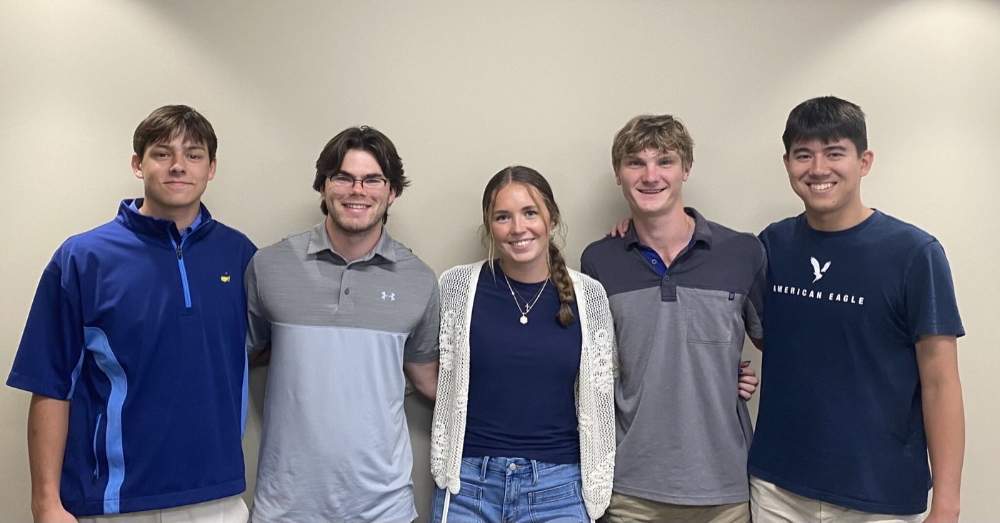

Biography
A short portrait of where I am now and where I'm headed next.

I'm an incoming junior at the University of Arizona's Eller College of Management, studying Business Economics and preparing for law school in 2028. I'm a firm believer that hard work brings results, and I strive to put my best foot forward every day.
My background combines business analytics with hands-on work. In the summer of 2025, I completed a logistics internship with Automatic Pool Covers, where I led a nationwide operational analysis of all service-truck data. I brought cost-saving recommendations to executives, including a research-backed solution to bring in a software company that uses AI to route the trucks. Before that, I worked in the field as a technician's assistant, learning the ins and outs of the industry, and as a valet attendant, which built my customer-service skills and taught me to lead with compassion. Those roles built habits I carry into every part of life: listening before acting, solving problems under pressure, and following through to earn people's trust.
My goal is to earn admission to law school after graduation and to have a positive impact along the way. I want to show how I see myself, how others see me, and keep developing as I head toward law.
- Analytical & evidence-driven
- Clear, persuasive communicator
- Service-oriented leader
- Arizona Women's Practice Basketball Player
- Member of the Italian Club
- Member of the Arizona Club Golf Team